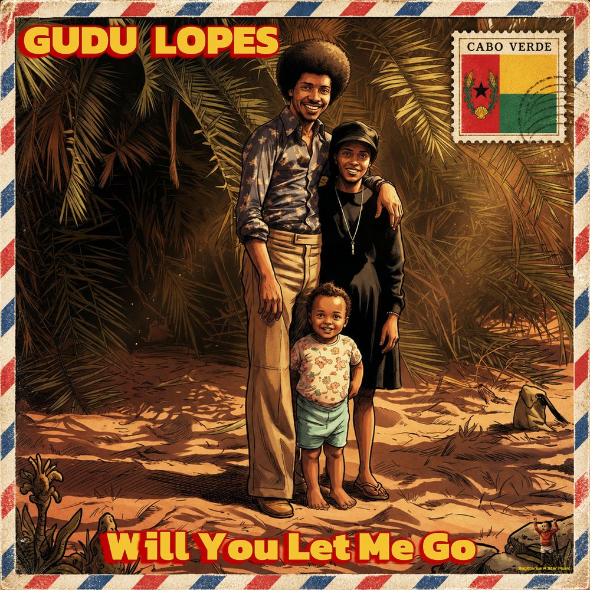

Door of Forgetting
Door of Forgetting

Door of Forgetting is an album exploring the many shapes of letting go: the slow forgetting of Alzheimer’s, mourning the dead, ending a relationship, the Cabo Verdean experience of leaving family behind to seek a better life.
But it’s not only that. Contemplation, for instance, is accepting the past but also looking forward — a bit of hope there. Will You Let Me Go is also kind of asking the loved one to move on, in the positive sense: it can be the dead asking the living to mourn, but afterwards to let go and move on. This ties to what Contemplation ultimately asks. There is always that sprinkle of hope. In the Old Gudu trilogy — Mist, No Escape and Descent into the Abyss — we start with uncertainty and fear, but then comes acceptance; in some way, this too ends on a positive note.
- 1Mist
- 2No Escape
- 3Descent into the Abyss
- 4Tau
- 5Contemplation
- 6Will You Let Me Go
- 7Train Leavingin progress
No Escape
Descent into the Abyss
Tau
Contemplation
Will You Let Me Go

- 1Will You Let Me Go
- 2Will You Let Me Go (Paizinho Version)
- 3Will You Let Me Go (Mãezinha Version)
- 4Will You Let Me Go (Easy Come Easy Go Instrumental)
- 5Will You Let Me Go (Instrumental dos Pais)
This is a song asking a loved one to let you go. It can be about leaving a lover, a friend, family — like how family would be left behind in Cabo Verde while their loved ones would go abroad to seek a better life, or parents letting their child go to study in a land far away. It can also be about mourning a loved one that has died.
Something that for me personally felt like saying goodbye was seeing my sons grow up. I had to say goodbye to the baby, to the toddler, the preschoolers and the school-aged boys. These were some of the happiest times of my life; it’s a beautiful thing to see them grow up. However, looking forward, I’m proud of the adolescents they have become. For a parent, here too you have to let them go, accept that they don’t need you as much as before — and that’s OK, it’s the way it should be.
I’m singing in this song, and you will notice I’m not the best singer. But because these songs have so much emotional value and are so deeply personal, even if a true singer would make the song better, for me it would lose its heart. At the end of the day, this is why I like making music: it’s therapeutic, and I love it with all its imperfections.
For the music video of Will You Let Me Go I chose to tell the story of my parents coming from Cabo Verde to Belgium, and the road that they travelled: the women going to Italy as au pairs, the men going to the Netherlands to board ships. It’s a typical story of that period in time, for many Cabo Verdean people and certainly my family. Many went on almost the same, or certainly a comparable, journey.
Lyrics
Verse 1 & 2
Will you let me go
Easy come
Far away offshore
Easy go
Walk out that door
Easy come
See you no more
Easy go
Will you let me go
Easy come
Tchom bai nha amor (Let me go, my love)
Easy go
Choir section
Gudu & tenors: Let me go, oooh
Tenors & basses: Let me go, let me go (2×)
Altos & sopranos: Let me go, let me go (2×)
Tutti: Let me go, let me go (2×)
Gudu: Let me go, let me go
Gudu: Let me go, let me…
Queen section
Let, let me
Go gogo
Easy come
Easy go
Go gogo
Will you let me
Go gogo gogo
Go gogo goo
Will you let me
Go gogo gogo
Will you let me
Go gogo gogo
Will you let me… go
Choir outro
No, no
We will not let you go
Original music by Gudu Lopes · Music video by Gudu Lopes
Still to come
The closing track of this door is on the way: Train Leaving.